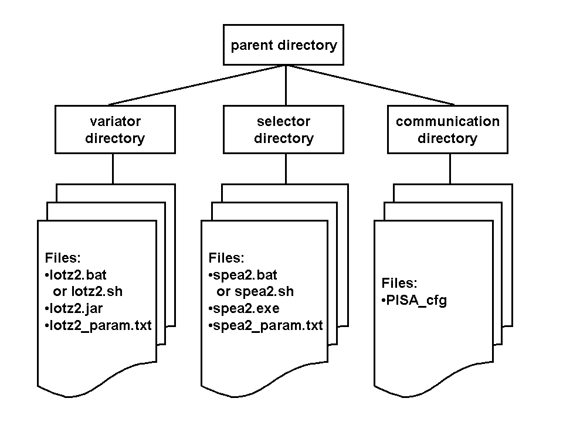

Provides a template for implementing a PISA variator, including an example for a Lotz2 variator. The following section
explains how the example Lotz2 (leading ones trailing zeros) variator can be run and how a user can adapt it to fit its own
optimization problem.
The leading ones trailing zeros optimization problem (LOTZ)
The leading ones trailing zeros optimization problem is a very simple two-objective optimization problem without any practical relevance. It is solely used
to demonstrate how an evolutionary algorithm (EA) is able to solve an optimization problem.
The decision space representation of an LOTZ-individual is a simple 0/1-bitstring. There are two objectives which
have to be optimized: the number of leading ones (lo) and the number of trailing zeros (tz) in the bitstring.
Consider for example the following bitstring: "1 1 0 1 0 0 1". This bitstring has 2 leading ones and 0 trailing zeros.
More examples:
| bitstring
| lo
| tz
|
1 1 1 1
0 1 0 1
1 0 0 0
1 1 0 1
0 1 0 0
|
4
0
1
2
0
|
0
0
3
0
2
|
For a bitstring of length 4, the Pareto-optimal solutions are "1 1 1 1", "1 1 1 0", "1 1 0 0", "1 0 0 0" and "0 0 0 0".
How to run the example Lotz2 variator
The example Lotz2 variator takes three arguments:
- The path to the parameter file: e.g. "./param.txt". The parameter file contains the user-defined parameters. For the Lotz2 problem,
the following parameters can be specified: maximum_generations, recombination_probability, mutation_probability, bitflip_probability, seed, debug_print
and output_filename. These parameters all have default values, so it is ok to set the path to an empty file.
- the path to the communication files: e.g. "./PISA_". PISA appends the necessary endings for all communication files
to this name base.
- the polling interval in seconds: e.g. "1". Specifies the interval in which the state file is polled.
As an evolutionary algorithm also needs a selector, you have to choose a selector and run it as well. The arguments are similar to those
of the variator.
Step by step instructions
To be able to execute a PISA run, three things are needed: A variator, a selector and a communication directory. A good directory structure
to use could look like:

- Get or create the parameter file of the variator. The Lotz2 variator package comes with a standard parameter file "lotz2_param.txt".
- Get or create the parameter file of the selector. Most selectors come with a default parameter file. Otherwise
refer to the documentation of the corresponding selector.
- Create a directory where the communication files will be stored (e.g. "./PISACommunication/").
- Put the PISA configuration file into that communication files directory. The name of the configuration file
must comply with the chosen name base (e.g. "PISA_") and must end with "cfg". So in the example case, the file must be
called "PISA_cfg" (without a ".txt" or similar endings). The communication file must look like this:
alpha 20
mu 20
lambda 20
dim 2
where the number behind the alpha is the number of individuals in the initial population,
the number behind the mu is the number of parents which are selected by the selector,
the number behind the lambda is the number of offspring which are generated by the variator,
and the number behind the dim is the number of objectives. For the Lotz2 problem, mu
must be equal to lambda and the number of objectives is 2.
- Start the variator (this jar-file was compiled with java version 1.6.0_06):
- Windows/Linux:
java -jar lotz2.jar lotz2_param.txt ../PISACommunication/PISA_ 0.2
- On Windows/Linux, you can also execute the
runLOTZ2.bat/runLOTZ2.sh file, which contains the above command.
- To use a different version of java under Windows,
use:
java -jar -version:1.6.0_06 lotz2.jar lotz2_param.txt ../PISACommunication/PISA_ 0.2,
on Linux, use java-1.6.0 -jar lotz2.jar lotz2_param.txt ../PISACommunication/PISA_ 0.2.
Alternatively, you could recompile the jar-file from the source files.
- Note: If you don't have a JRE installed, you can download it from here.
- Start the selector. Make sure that the second argument
(Communication file path) of both variator and selector point to the same directory:
- Java: Similarily to the variator, use the command
java Selector ./param.txt ./PISACommunication/PISA_ 1
or execute selector.bat (Windows) or selector.sh (Linux):
- C on Windows:
selector.exe selector_param.txt ../PISACommunication/PISA_ 0.2 or execute the corresponding runSELECTOR.bat file.
- C on Linux:
./Selector ./selector_param.txt ./PISACommunication/PISA_ 0.2 or execute the runSELECTOR.sh file, if available.
- Similaritly, you can use any other programming language that can read and write files.
How to adapt the example variator to a user-defined optimization problem
To adapt the variator to a user-defined problem, only the Individual and the Population classes have
to be adapted:
Individual.java
According to the abstract class IndividualAbstract that the Individual class is extending, the user needs
to implement two methods. The first method eval calculates the objective space values of the individual. To implement such a
method, the user probably also needs to define a suitable decision space representation. The second method copy is a
simple method to generate a copy of the individual itself.
Population.java
According to the abstract class PopulationAbstract that the Population class is extending, the user needs to implement
the following 5 methods:
-
initialize(): Initializes the population with alpha inidviduals
-
performVariation(offspring): Variates the offspring (which at first are simple copies of the parents)
-
isFinished(): Termination criterion like reaching a user-defined maximum number of generations
-
setNonfixedParam(paramName, paramValue): Sets the user-defined parameters which can be given in the parameter file
-
testParam(): Tests whether the given parameter have reasonable values.
Related Documentation
For PISA-related documentation and downloads, please see: